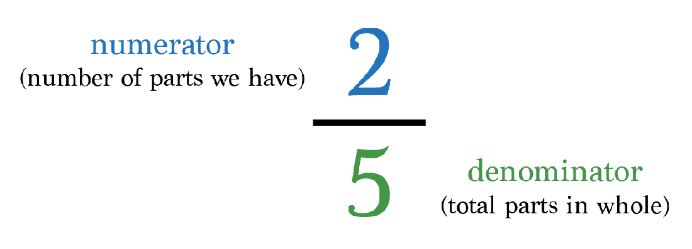
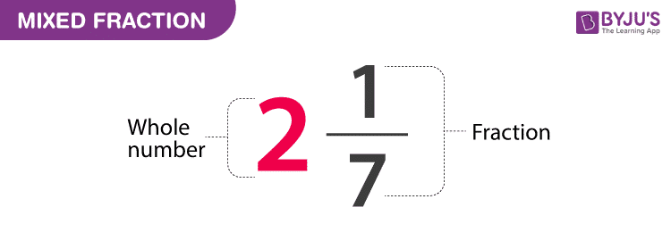

Fractions as Fair Sharing
Have you ever wondered how to share something equally when it doesn’t divide into whole numbers—like splitting snacks with friends, dividing art supplies, or planning weekly chores? Whenever you share fairly, division and fractions work together to tell you exact fair shares!
1. Meet the Two Parts of Every Fraction
Across this entire course, we use two consistent colors so you can always see how a visual diagram connects to a written fraction:

Counts how many equal pieces one fair share gets.
Tells how many equal parts 1 whole is cut into.
Click any card below to flip it, or press 🔊 Listen to hear a quick voice explanation:
2. See It in Action: 3 Chocolate-Chip Cookies Shared by 4 Friends
Suppose 4 friends want to share 3 warm chocolate-chip cookies equally (3 ÷ 4). There aren’t enough cookies for everyone to get 1 whole cookie—so we cut each cookie into 4 equal fourths!
Which setup finds how many hours of chores Rue will do each day?
Write 1 Day’s Share as a Fraction (10 ÷ 7)
Click bar slices or drag the dot on the left, then write your Blue Numerator and Green Denominator:
Group 10/7 into a Mixed Number & Explain

Whole # = full 1-hour bars · Fraction = leftover blue pieces over green parts in 1 hourWhy does this daily amount make sense?
1. Write 1 Fair Share as a Fraction
2. Compare 1 share to 1 whole:
3. Write as a Mixed Number: